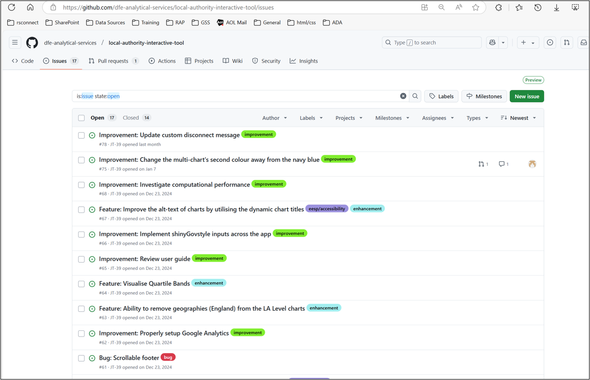

new_la_code la_name
1 E06000008 Blackburn with Darwen
2 E06000003 Redcar and Cleveland
3 E06000001 Hartlepool
4 E06000004 Stockton-on-Tees
5 E06000002 Middlesbrough
6 E06000005 DarlingtonYou’re Never Too LAIT To Start
Building Production Grade Shiny Apps
Jake Tufts
Overview
- LAIT’s Background
- Planning a Shiny App
- Development & Coding
- Deployment & User Testing
LAIT’s background
Original LAIT
Released in 2007
Built as an Excel workbook using macros
Developed and coded by an SEO
LAs have a consistent data source

A problem…
… LAIT is taken off GOV.UK
In 2018, new regulations set a legal duty for public sector bodies to make all web or app content accessible, with only a few limited exceptions.
- Regardless of disability, setting or technology, all users should be able to access our content.
- LAIT given an exemption due to its importance to LAs.
- In 2024, exemption lifted and LAIT removed…
A Shiny Light at the End of the Tunnel
Our G7 put in significant work to get this project prioritised.
- Shiny identified as the best option:
- Cheapest
- Expertise in the wider unit (RG Data Science)
- Capable software
- Process setup for deploying to public
- In-house and open code/data
You Wouldn’t Wing A Project
Planning Your Work
Ask Yourself (And Others) Why?
Who are the users?
What are the use cases?
… this informs:
The Product: Is an app actually needed?
Content: What data shall I include?
Functionality: How do I make this work?
Timelines: When are my deadlines?
Step Outside The World Of Code
- Workshops
- Minimum Viable Products (MVPs)
- Brainstorming/System-thinking


Build the Scaffolding
- Breakdown the content, modularise the app
- Choose your charts, finalise functionality
- Back-end is your beating heart üíì
- What is the data source?
- How often is this updated?
- Automate for future you
Get Creative - Pictures are Worth a 1000 Words
- Sketch the app layout
- Code process maps


PM‚Äôs Get the Big Bucks ü™ô
- High-level overarching timeline
- Start small with a detailed development timeline
- Version Control is a MUST, utilise their PM tools
- Don’t forget your Eureka moments!

Is There A Skip Intro Button?
Coding and Developing a Shiny App
What Is Shiny?
{shiny} is an R package to easily build interactive apps
It connects user inputs (like sliders, text boxes, buttons) to reactive outputs (like plots, tables, summaries).
Or in the {shiny} language the UI to the server.
Languages usually required to code websites are neatly packaged up into R functions:
- JavaScript
- HTML
- CSS
Shiny apps can be:
- Used locally on your computer
- Deployed to servers, Posit Connect/shinyapps.io or GitHub
#| '!! shinylive warning !!': |
#| shinylive does not work in self-contained HTML documents.
#| Please set `embed-resources: false` in your metadata.
#| standalone: true
#| viewerHeight: 655
req_pkgs <- FALSE
if(req_pkgs) {
library(shinylive)
}
# Define UI
ui <- shiny::fluidPage(
shiny::titlePanel("Simple Shiny App"),
shiny::sidebarLayout(
shiny::sidebarPanel(
shiny::sliderInput(
inputId = "num_points",
label = "Number of random points:",
min = 10,
max = 1000,
value = 100
)
),
shiny::mainPanel(
shiny::plotOutput(outputId = "scatter_plot")
)
)
)
# Define server logic
server <- function(input, output, session) {
output$scatter_plot <- shiny::renderPlot({
x <- rnorm(input$num_points)
y <- rnorm(input$num_points)
plot(x, y, main = paste("Scatterplot with", input$num_points, "points"),
xlab = "X", ylab = "Y", pch = 19, col = "steelblue")
})
}
# Run the app
shiny::shinyApp(ui = ui, server = server)# Define UI
ui <- shiny::fluidPage(
shiny::titlePanel("Simple Shiny App"),
shiny::sidebarLayout(
shiny::sidebarPanel(
shiny::sliderInput(
inputId = "num_points",
label = "Number of random points:",
min = 10,
max = 1000,
value = 100
)
),
shiny::mainPanel(
shiny::plotOutput(outputId = "scatter_plot")
)
)
)
# Define server logic
server <- function(input, output, session) {
output$scatter_plot <- shiny::renderPlot({
x <- rnorm(input$num_points)
y <- rnorm(input$num_points)
plot(x, y, main = paste("Scatterplot with", input$num_points, "points"),
xlab = "X", ylab = "Y", pch = 19, col = "steelblue")
})
}
# Run the app
shiny::shinyApp(ui = ui, server = server)Shiny Modules - What Are They?
Shiny Modules - Pros & Cons
Modules are essentially the functions of Shiny
Pros:
- Best practice
- Breaks the app down into smaller segments
- Permits collaboration
- Colleagues can pick-up faster
- Re-usable
- Easy to test/de-bug
Cons:
- Initial learning curve
- Overly complex for smaller apps
- Requires good code management
- Sharing reactive values between modules is more involved

Shiny Modules - My workflow
Start easy. Get it working. Finesse.
- Start in plain R
- Get this working as a mini app
- Finesse the app into Shiny modules
Find a workflow that suits you
Shiny Modules - How To Build
Allow you to box the UI and server code together into ‚Äúmini apps‚Äù inside your main app. üì¶
Each module has:
randomPlotUI <- function(id) {
ns <- shiny::NS(id) # Namespace to avoid conflicts
shiny::tagList(
shiny::sidebarLayout(
shiny::sidebarPanel(
shiny::sliderInput(
inputId = ns("num_points"),
label = "Number of random points:",
min = 10,
max = 1000,
value = 100
)
),
shiny::mainPanel(
shiny::plotOutput(outputId = ns("scatter_plot"))
)
)
)
}randomPlotServer <- function(id) {
shiny::moduleServer(id, function(input, output, session) {
output$scatter_plot <- shiny::renderPlot({
x <- rnorm(input$num_points)
y <- rnorm(input$num_points)
plot(x, y, main = paste("Scatterplot with", input$num_points, "points"),
xlab = "X", ylab = "Y", pch = 19, col = "steelblue")
})
})
}Shiny Modules - How To Build
Now use the modules in the typical Shiny layout:
#| '!! shinylive warning !!': |
#| shinylive does not work in self-contained HTML documents.
#| Please set `embed-resources: false` in your metadata.
#| standalone: true
#| viewerHeight: 600
# UI module
randomPlotUI <- function(id) {
ns <- shiny::NS(id) # Namespace to avoid conflicts
shiny::tagList(
shiny::sidebarLayout(
shiny::sidebarPanel(
shiny::sliderInput(
inputId = ns("num_points"),
label = "Number of random points:",
min = 10,
max = 1000,
value = 100
)
),
shiny::mainPanel(
shiny::plotOutput(outputId = ns("scatter_plot"))
)
)
)
}
# Server module
randomPlotServer <- function(id) {
shiny::moduleServer(id, function(input, output, session) {
output$scatter_plot <- shiny::renderPlot({
x <- rnorm(input$num_points)
y <- rnorm(input$num_points)
plot(x, y, main = paste("Scatterplot with", input$num_points, "points"),
xlab = "X", ylab = "Y", pch = 19, col = "steelblue")
})
})
}
# Main UI
ui <- shiny::fluidPage(
shiny::titlePanel("Simple Shiny App"),
randomPlotUI("plot1"),
randomPlotUI("plot2")
)
# Main Server
server <- function(input, output, session) {
randomPlotServer("plot1")
randomPlotServer("plot2")
}
# Run the app
shiny::shinyApp(ui, server)Shiny Modules - LAIT’s Model Modules
{shinytest2}
I know we all test our functions, so why stop there?
- Test the server
- Test UI
- Made easy with Shiny modules
shinytest::test_app() in LAIT# BDS_FilteredServer() --------------------------------------------------------
test_that("1. BDS_FilteredServer correctly filters bds_metrics", {
# Simulate the app_inputs object with reactive values
app_inputs <- shiny::reactiveValues(
topic = reactive({
"Economic Factors"
}),
indicator = reactive({
"Percentage of children in low income families"
})
)
shiny::testServer(BDS_FilteredServer, args = list(app_inputs, bds_metrics), {
# Trigger the observeEvent by setting the indicator input
session$flushReact()
# Retrieve the filtered data
filtered_data <- session$returned()
# Expected result based on the mock data
expected_data <- bds_metrics |>
dplyr::filter(
Topic == "Economic Factors",
Measure == "Percentage of children in low income families"
)
# Test that the filtered data matches the expected result
testthat::expect_equal(filtered_data, expected_data)
})
})# Start an app running
app <- AppDriver$new(
name = "basic_load",
height = 846,
width = 1445,
load_timeout = 100 * 1000,
timeout = 60 * 1000,
wait = TRUE,
options = list(test.mode = TRUE),
expect_values_screenshot_args = FALSE # Turn off as we don't need screenshots
)
# Wait until Shiny is not busy for 5ms so we know any processes are complete
app$wait_for_idle(5)
# Test that the app will start up without error
# Checks that the title is as expected
testthat::test_that("App loads and title of app appears as expected", {
testthat::expect_equal(
app$get_text("title"),
# This is the title of the app on load, you should change to match your app's title
# The app title is usually set early on in the ui.R script or through a variable in the global.R script
paste0(
"Local Authority Interactive Tool (LAIT) - LA Level: ",
"Barking and Dagenham, A level cohort Average point score per entry"
)
)
})
app$stop()DfE’s shiny-template
Out-the-box GOV.UK styled Shiny app.
- Professional aesthetic
- Users trust and are familiar with the UI
- Meets accessibility standards
- Continuously improved
{shinyGovstyle} and {dfeshiny}
GOV.UK styled UI elements and helpful functions to handle Shiny housekeeping
{afcharts} and {ggiraph}
Combine Analysis Function approved charts with an accessible interactive charting framework
# Main plot
plot <- data |>
ggplot2::ggplot() +
ggplot2::geom_line(
ggplot2::aes(
x = year,
y = lifeExp,
colour = country,
group = country
),
linewidth = 1
) +
ggiraph::geom_vline_interactive(
data = tooltip_data,
ggplot2::aes(
xintercept = year,
tooltip = tooltip,
data_id = year
),
hover_nearest = TRUE,
color = "transparent",
linetype = "dashed",
size = 3
) +
ggplot2::scale_x_continuous(breaks = seq(1952, 2007, 5)) +
afcharts::scale_colour_discrete_af() +
ggplot2::labs(
x = "Year",
y = NULL,
title = "Living Longer",
subtitle = "Life Expectancy in the United Kingdom and China 1952–2007",
caption = "Source: Gapminder",
colour = NULL
) +
afcharts::theme_af()
# Display the interactive plot
ggiraph::girafe(ggobj = plot)TODO: Pick out some nice examples of these packages (LAIT related?)
{dfeR}
A host of handy functions managed by DfE analysts

Useful guidance
- Analysis Function Guidance Hub
- Engineering Production Grade Shiny Apps
- AI
- Appsilon
- Take inspiration from other apps
- Shiny modules/Shinyconf
Reactivity Spaghetti Junction
Reactive objects are the drivers of interactivity in Shiny
shiny::sliderInput()
However, as your apps get more complex reactivity can become a headache
Especially when multiple inputs can update each other, leads to endless loops
Try to keep things simple
Map out how your different user inputs interact
FUNctionality - Sky’s the Limit
Coding is just really problem solving. Like LEGO you can build anything you put your mind to.
Copy-to-clipboard
$(document).ready(function () {
// General function to handle image copying
async function copyImage(namespace) {
const buttonId = `#${namespace}-copybtn`;
const imageContainerId = `#${namespace}-copy_plot`;
const src = $(`${imageContainerId}>img`).attr("src");
if (!src) {
alert("No image source found!");
return;
}
try {
const blob = await getImageBlobFromUrl(src);
await navigator.clipboard.write([
new ClipboardItem({
[blob.type]: blob
})
]);
Shiny.setInputValue("copy-to-clipboard-success", true, {priority: "event"});
} catch (err) {
console.error(err.name, err.message);
Shiny.setInputValue("copy-to-clipboard-failure", true, {priority: "event"});
}
}Create Your Own

TODO: Add a video of the Create Your Own page
Shout, Shout, Let It All Out
Deployment and User Testing
Deployment Options üíª
The solution to your deployment dilemma depends upon your:
- Audience (and access) üîê
- Technical expertise ⚙️
- Resource available (time & money) ⌛
| Option | Authentication | Security | Scaling | Ops Overhead | Investment | Hosting Options |
|---|---|---|---|---|---|---|
| Vanilla Shiny | None by default; requires external solution | Depends on hosting platform and setup | Manual; complex if session management is required | High; requires infra & scaling expertise | Time, effort, infrastructure costs | Direct VM, unmanaged/managed containers |
| Shinyapps.io | Built-in (limited); no external integration | Shared platform; data/code hosted externally | Limited by tier (runtime hours, users) | Very low; no infra required | Subscription-based (free → professional) | Fully managed by Posit |
| Shiny Server (OSS) | None by default; external or code-based | Self-managed; depends on hosting practices | No auto-scaling; single process per app | Medium; simpler than Vanilla Shiny | Free (open-source); hosting effort needed | Direct VM, containerized (self-managed) |
| Posit Connect | Full enterprise support; many options | Self-managed; highly robust | Multi-user, multi-process auto-scaling | Low; designed for ease of maintenance | Paid license (per server/user) | Direct VM, Kubernetes (off-host execution supported) |
| GitHub Pages + ShinyLive | None (public) | Static site; JS/WebAssembly runs client-side | Infinite (browser-based; depends on client resources) | Very low; simple static site deployment | Free (GitHub); time to package app | GitHub Pages + ShinyLive tooling |
Continuous Integration
Practice of merging code into the test/live area regularly.
Helps detect and resolve issues early, leading to faster development and higher quality.
Examples of CI:
- Git Hooks
- Automated linting
- Automated tests
- Immediate build and deployment
CI is setup using .yaml files and harnessing automated workflows like GitHub Actions.
The LAIT’s deploy-shiny.yaml GitHub workflow
on:
push:
branches:
- main
name: Shinyapps.io deploy
jobs:
deployShiny:
runs-on: ubuntu-latest
env:
GITHUB_PAT: ${{ secrets.GITHUB_TOKEN }}
steps:
- name: Check out repository
- uses: actions/checkout@v4
- name: Set up R
- uses: r-lib/actions/setup-r@v2
with:
r-version: '4.4.1'
use-public-rspm: true
- name: Set env vars (prod)
run: |
echo "SHINYAPP_NAME='local-authority-interactive-tool'">> $GITHUB_ENV
- name: Restore renv snapshot
shell: Rscript {0}
run: |
if (!requireNamespace("renv", quietly = TRUE)) install.packages("renv")
renv::restore()
- name: Install rsconnect
shell: Rscript {0}
run: |
if (!requireNamespace("renv", quietly = TRUE)) install.packages("renv")
renv::install("rsconnect")
- name: Push to shiny.io
run: >
Rscript
-e "rsconnect::setAccountInfo(name = 'department-for-education', token = '${{secrets.SHINYAPPS_TOKEN}}', secret = '${{secrets.SHINYAPPS_SECRET}}')"
-e "rsconnect::deployApp(appName=${{env.SHINYAPP_NAME}}, forceUpdate = TRUE)"User Testing
Absolutely crucial. Should be done ASAP and throughout.
But… I see “user testing” as receiving feedback from anyone:
- Team member
- Non-technical colleague
- External users
Proof Is In The Pudding
LAIT is the DfE’s 2nd most used external Shiny app (by unique users)
TODO: Plot of the top externally used apps (if allowed - check with Cam)
Knight In Shining Armour
You’ve done it…
- Investigated and confirmed the need for a Shiny app.
- Sketched out maps to plan your development and guide timelines/milestones.
- Used Shiny best practice to build a modular structure.
- Harnessed the government Shiny frameworks to produce GOV.UK accessible content.
- Ensured the user’s experience is stress free with custom functions, available R packages and seamless interactivity.
- Designed and executed cool new functionality which warrants the use of Shiny and shows off your coding and creativity.
- Chosen the right method to deploy.
- Engaged with users throughout, adjusting content on the go.
… successfully and skillfully developed, deployed (and will maintain) an excellent, accessible, sustainable Shiny app.
Useful Links
- https://user-guidance.analytical-platform.service.justice.gov.uk/apps/rshiny-app.html#overview

DfE Data Science